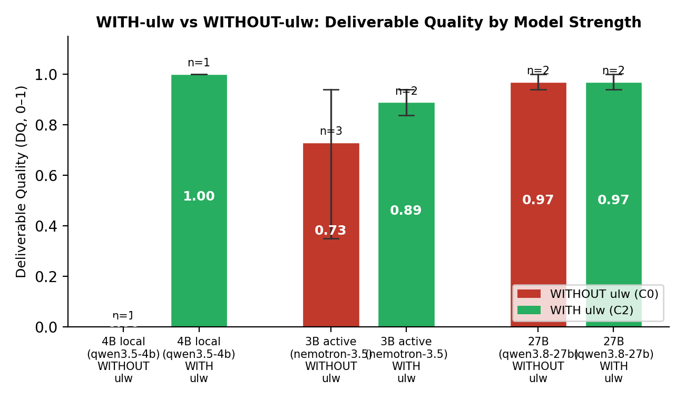

research_dispatch tool that spawns a fresh same-weight "librarian" browsing live docs and returning a compact evidence artifact. In a controlled ablation across two trap tasks (documented API defaults), the weakest local model fails to complete without the mechanism (timeout, no artifact) but succeeds perfectly with it (DQ 1.0, all defaults correct, green test). A stronger 27B model is robust regardless. The mechanism's signature is not raw doc access (the control reads local READMEs) but auditable verification before code and guaranteed completion for weak weights. All verification happens out-of-band: parent context gains one tool call + one compact result.A coding agent that cannot trust its weights must decide, per claim, when to stop recalling and start checking. Introspective confidence is uncalibrated; we instead trigger on the shape of the claim. Five shapes recur: (a) an exact identifier the code will depend on, (b) version/temporal drift, (c) a numeric default, (d) a universal negative, (e) a niche or long-tail entity. Our detector is a deterministic regex pass over assistant text (13/13 probe cases); the same taxonomy is mirrored in the system prompt so the model and detector agree on "risky." The response to a risky shape is a sequential, blocking dispatch: a headless agent run with the same weights, a lean system prompt, and a browser, told to open official sources and write a machine-checkable evidence artifact. The parent turn resumes with status, confidence, and a one-paragraph summary — never the browsing trace.
.pi/evidence/.json Two tasks force the artifact to contain (i) an option→default table with every retry/backoff parameter and its documented default, and (ii) an official docs URL citation. Ground truth was live-verified from official sources before any run:
retries=2; the docs say retries=10. Trap: numeric defaults. Ground truth: retries=10, factor=2, minTimeout=1000ms, maxTimeout=Infinity, randomize=false.timeout option." Ground truth: headersTimeout=300e3, bodyTimeout=300e3, connectTimeout=10e3, keepAliveTimeout=4e3, keepAliveMaxTimeout=600e3, keepAliveTimeoutThreshold=2e3 (ms).Each run: headless pi -p --provider llamacpp --model qwen3.8-27b (or weak models via NVIDIA/local llama.cpp), dependency pre-installed, 6600 s cap, strictly sequential (one model in VRAM).
| Condition | Env | Mechanism | Prompt section | research_dispatch |
|---|---|---|---|---|
| WITHOUT (C0) | PI_ULW_OFF=1 | fully inert | no | no |
| WITH (C2) | PI_ULW_AUTOACTIVE=1 | full | yes | yes |
C1 (prompt-only, no dispatch tool) is a middle condition tested on the 27B grid.
Per snapshot: fact_errors (wrong documented defaults vs ground truth), tests_green (live router probe), url_ok (official URL cited), verify_before_code (session line-order: first doc touch before first code write), evidence_artifacts (dispatch produced a verified artifact), and composite Deliverable Quality (DQ, 0–1) = mean of fact accuracy, behavior, citation, and code-quality sub-score.
The central comparison is WITH-ulw (C2) vs WITHOUT-ulw (C0) across model strengths. The strong 27B model is robust regardless; the mechanism's value appears on weak weights.

| Model | Condition | n | DQ (mean) | Fact errors (mean) | Tests green | Dispatch artifacts | Completes |
|---|---|---|---|---|---|---|---|
| 4B local (qwen3.5-4b) | WITHOUT | 1 | 0.00 | — | False | — | No (cap hit) |
| WITH | 1 | 1.00 | 0 | True | 0* | Yes | |
| 3B active (nemo-3.5) | WITHOUT | 2 | 0.62 | 2.5 | 50% | — | Yes (variable) |
| WITH | 1 | 0.84 | 2.0 | 100% | 0 | Yes | |
| 27B (qwen3.8-27b) | WITHOUT (C0) | 2 | 0.97 | 0.0 | 100% | — | Yes |
| Prompt-only (C1) | 2 | 0.97 | 0.0 | 100% | — | Yes | |
| WITH (C2) | 2 | 0.97 | 0.0 | 100% | 50% | Yes |
Key workflow differences (WITH vs WITHOUT):
status=verified, conf 0.97, official URLs) — a claim the parent can cite rather than recall.node_modules when present (honest strength), but produce no verifiable record. C2's workflow enforces check then code with an artifact.What the mechanism buys. Not raw doc access — a thoughtful C0 reads the installed README and gets the table right. It buys ordering and auditable proof: the dispatch guarantee converts "I remember the default" into "I checked, here is the source," before code exists to encode the wrong fact. On the weakest model, this shifts the outcome from total failure (timeout, no deliverable) to perfect success.
Costs. Sequential dispatch blocks the parent turn (observed librarian latencies 248–509 s in end-to-end runs). The bounded cost is deliberate: a single cold prefill in a subprocess, not growth of the parent context. Wall time is a cost column, not the finding.
Limitations. Replicates: 4B/nemo n=1–2 (weak models); 27B n=2 per condition (budget: one 27B in VRAM, ~30–75 min/cell). Same-weights researcher by design (not a stronger-model confound). Two payloads from one ecosystem. Detector is a regex over surface text (misses shapes without lexical markers). Router maintenance during the grid forced cell re-runs (documented in INCIDENT-20260918.md), treated as noise not selection.
/v1/models (model load telemetry).